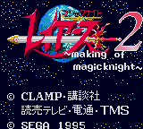

Magic Knight Rayearth - Game Gear Games
Magic Knight Rayearth
Company:
Sega
Date Released:
1994
Genre:
RPG
Magic Knight Rayearth 2: Making of Magic Knight

Company:
Sega
Date Released:
1995
Genre:
Unknown
Anime Video Game Resource Center © 1998 by
Luis A. Cruz
![[Magic Knight Rayearth]](images/ggMKR.gif)